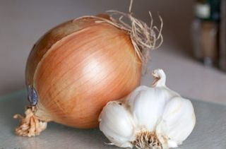
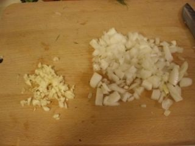
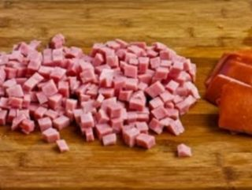
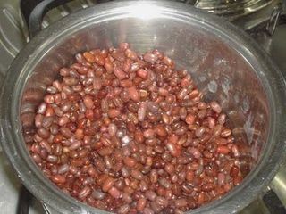

Шаг 1: подготавливаем овощи.

Вначале лук очищаем от шелухи и промываем под холодной проточной водой. Затем перекладываем на разделочную доску и с помощью ножа нарезаем его на небольшие кусочки произвольной формы. Для того, чтобы глаза меньше слезились, нож периодически надо ополаскивать под холодной проточной водой.

После измельченный компонент перекладываем в глубокую тарелку. Далее зубчики чеснока очищаем от шелухи, промываем под проточной водой и на разделочной доске мелко нарезаем компонент чем меньше, тем лучше. Затем убираем его к луку.
Шаг 2: подготавливаем ветчину.

Мясной компонент укладываем на чистую разделочную доску и ножом измельчаем на кусочки произвольной формы. Либо небольшим кубиком размером до 1 сантиметра, либо соломкой, на вкус это не сильно повлияет. Как только вы определились с формой и измельчили ветчину, перекладываем ее в тарелку.
Шаг 3: заправляем салат.

Теперь открываем банку с консервированной красной фасолью, аккуратно сливаем сок, так как он нам не понадобится и высыпаем фасоль в тарелку к измельченным овощам и ветчине. Далее солим по вкусу и перемешиваем столовой ложкой до однородности.